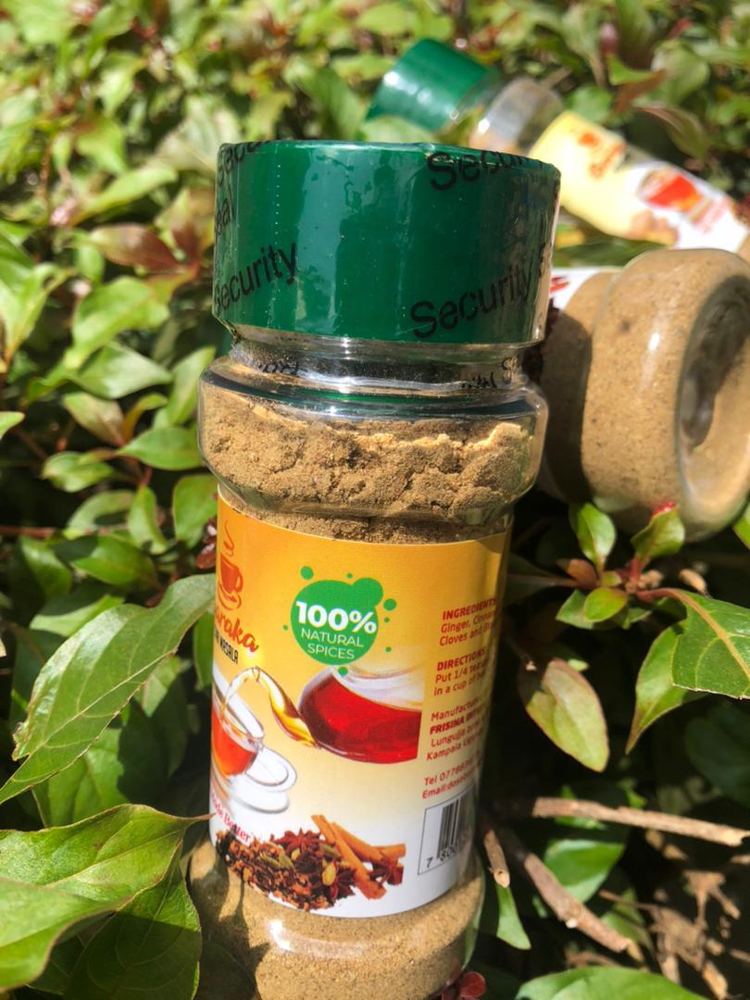
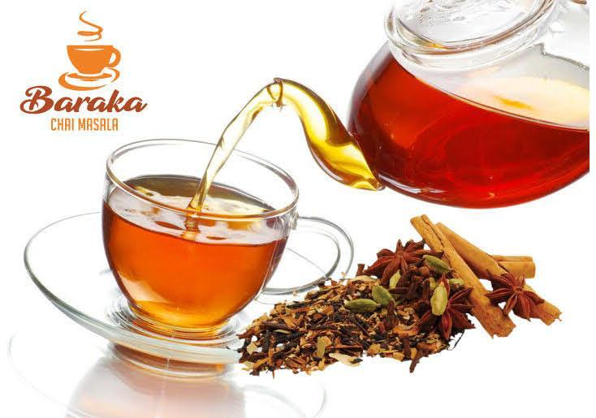
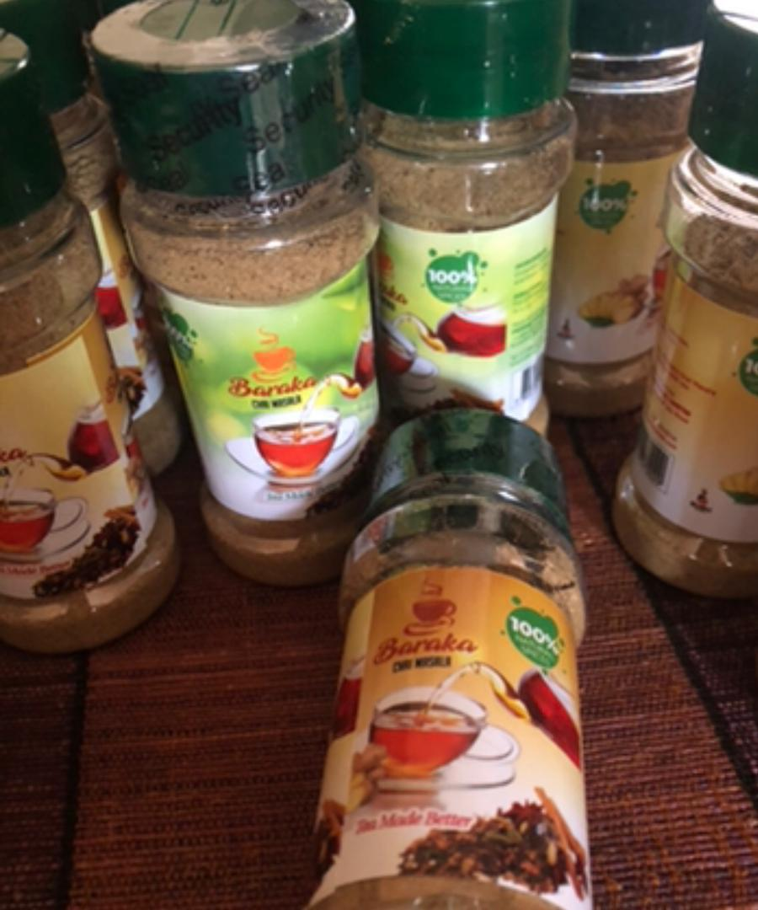
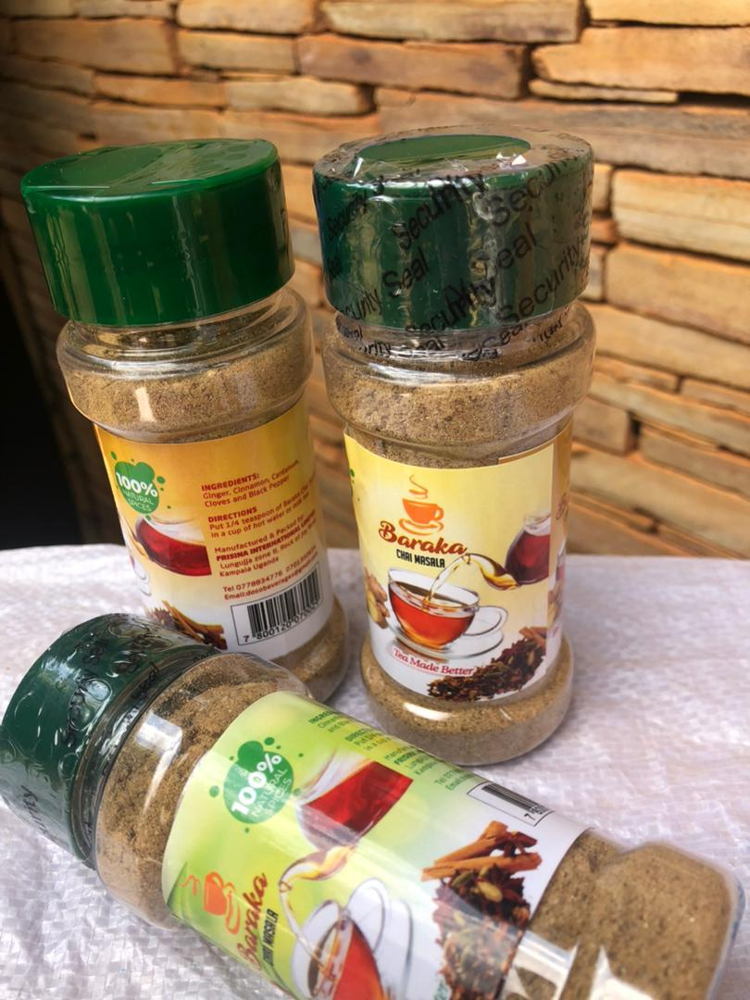

Experience the authentic warmth of cinnamon, ginger, cardamom, and clove in every cup.
See Our Masala
100% Natural Spices, Made in Uganda
Our Chai Masala is a finely ground mixture of the freshest, highest-quality spices sourced directly from Ugandan farms. This blend is formulated to elevate your standard tea into a rich, therapeutic, and aromatic experience.

The name Baraka means 'Blessing' in Swahili. We believe in delivering a blessing of flavor and quality. Our commitment is to sustainable sourcing, working closely with local Ugandan spice growers to ensure fresh products and fair trade practices.

